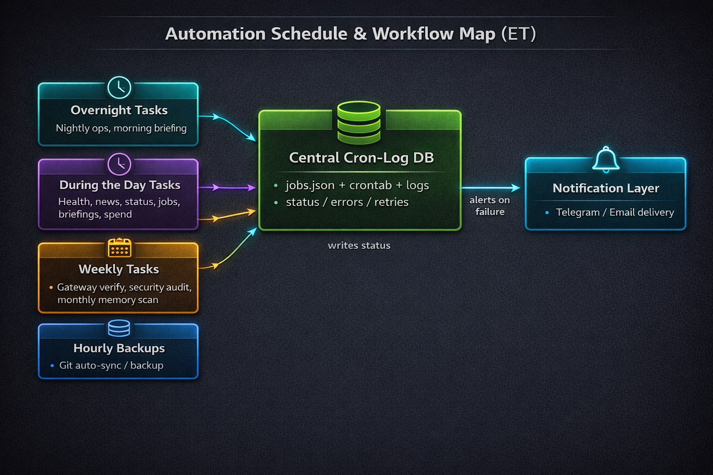
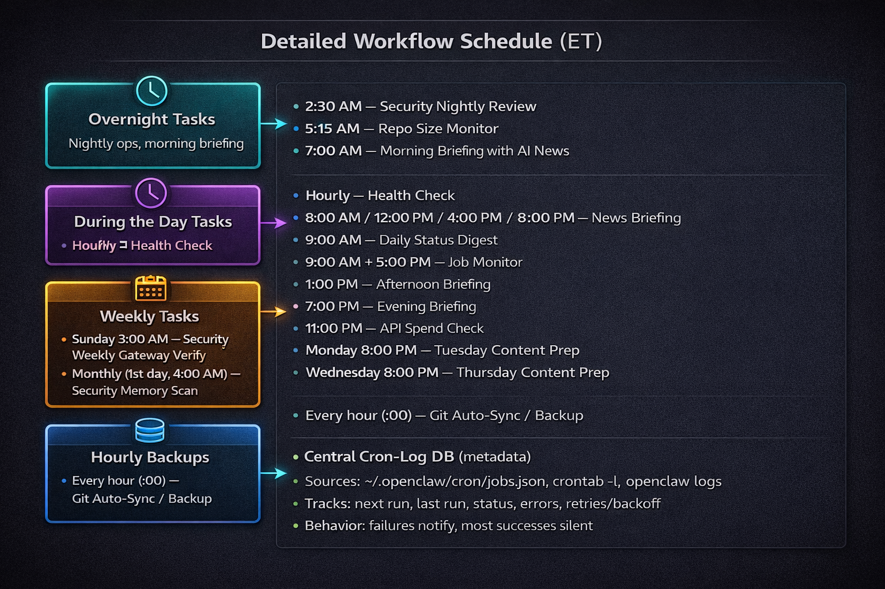

I’ve been running OpenClaw on my laptop for about a week and a half. It’s been useful, but I hit a practical problem quickly: as the number of automations grew, I lost a clean view of what was running, when it was running, and what failed versus what quietly succeeded.
This post is a simple build log: what I set up, why it helped, and the schedule I’m actually using.
Why I needed a schedule (the “no glue” problem)
I was feeding OpenClaw a lot of information over time, but I didn’t have any “glue” to track what I already gave it, what was running when, and what the system was doing day-to-day. I wanted a simple visual way to answer: What runs daily vs nightly vs weekly? How often do things run? What happens when something fails? Where do logs/status live? How do I keep backups safe?
The issue wasn’t model capability. It was coordination.
- I’d forget whether a task already existed in automation.
- I’d rerun things manually just to be safe.
- Failures were easy to miss unless I was actively watching logs.
- There was no dependable cadence.
The mental model
The system is intentionally simple:
Task buckets → Central Cron-Log DB → Notification Layer (on failure)
- Task buckets are grouped by timing (overnight, day, weekly/monthly, backups).
- A central cron-log layer records what should run, what did run, and what broke.
- Notifications go out on failure. Most success paths stay silent.

Caption: High-level architecture. Task buckets feed a Central Cron-Log DB, and failures route to notifications.
My actual schedule (what runs when)

Caption: Detailed schedule in ET, including overnight, daytime, weekly/monthly, and hourly backup workflows.
Central Cron-Log DB: the “single source of truth”
This is the part that made the whole setup calmer.
It consolidates:
~/.openclaw/cron/jobs.jsoncrontab -l- OpenClaw logs
It tracks:
- next run
- last run
- status
- errors
- retries/backoff
Rules I follow: don’t log secrets, and keep logs lean enough to debug without creating noise.
{
"jobId": "morning-briefing",
"schedule": "0 7 * * *",
"tz": "America/New_York",
"state": {
"nextRunAt": "2026-02-22T12:00:00Z",
"lastRunAt": "2026-02-21T12:00:03Z",
"lastStatus": "ok",
"consecutiveErrors": 0,
"lastError": null
}
}
2026-02-21T12:00:03Z job=morning-briefing status=ok durationMs=41234
2026-02-21T13:00:02Z job=health-check status=error error="timeout" retry=1 nextRun=2026-02-21T14:00:00Z
Failure handling + notifications
Operating philosophy: fail loud, succeed quiet.
Success shouldn’t spam. Failures should contain enough context to act quickly via Telegram/Email.
A useful failure alert should include:
- job name
- last run timestamp
- error summary
- retry count
- next step (retrying vs manual action)
Backups: Git auto-sync + local DB snapshots
I use two backup layers:
- Hourly Git Auto-Sync / Backup for versioned workspace artifacts.
- Local on-device backups for some databases I’ve put together.
Why both? Git gives recoverable config/file history. Local DB snapshots give data-level restore points.
Safety tips:
- Rotate old backups.
- Keep backup paths consistent and documented.
- Never back up secrets in plaintext.
What I learned after 2 weeks
- Cadence beats complexity.
- Logs are product. If they’re messy, operations feel broken.
- Boring schedules are good schedules.
- Failure paths need more design than success paths.
- One source of truth dramatically reduces context switching.
- Silence is a feature. Success spam creates alert fatigue.
- Backups need intentional restore strategy, not just storage.
What I’m adding next
- Better run-history dashboard
- Weekly rollup summary (ran/failed/flaky)
- Job tagging/grouping improvements
- Runtime metrics (durations, timeout hotspots)
- Clearer alert templates with explicit next actions
Appendix: Full schedule (copy/paste friendly)
Overnight
- 2:30 AM — Security Nightly Review
- 5:15 AM — Repo Size Monitor
- 7:00 AM — Morning Briefing with AI News
During the Day
- Hourly — Health Check
- 8:00 AM / 12:00 PM / 4:00 PM / 8:00 PM — News Briefing
- 9:00 AM — Daily Status Digest
- 9:00 AM + 5:00 PM — Job Monitor
- 1:00 PM — Afternoon Briefing
- 7:00 PM — Evening Briefing
- 11:00 PM — API Spend Check
- Monday 8:00 PM — Tuesday Content Prep
- Wednesday 8:00 PM — Thursday Content Prep
Weekly / Monthly
- Sunday 3:00 AM — Security Weekly Gateway Verify
- Monthly (1st day, 4:00 AM) — Security Memory Scan
Backups
- Every hour (:00) — Git Auto-Sync / Backup
- I also do local on-device backups for some databases I’ve put together.